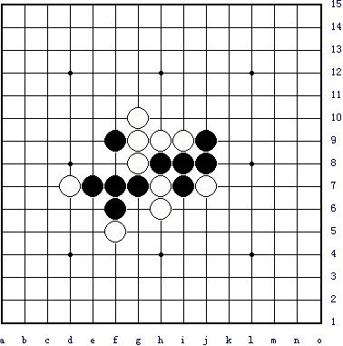
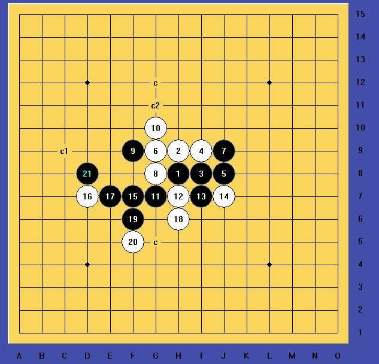

目算最佳
目算最佳
目算最佳

这个VCT真做不出来，软件算出来的！
附上小谱：
 1.rar
1.rar［此帖子已被 山城刀客 在 2012-3-20 22:12:55 编辑过］
［ 自来水 于 2012-3-20 22:26:36 时花20金币送鲜花一朵］
LS地毯都出来了哈，检查了下没达到VCT，鲜花支持下
不过VCT是有的，答案先不放，各位再算算，目算不行就手动吧...手动不行...都懂的
说实话，这个题目难度有点大了，如果仅仅是算杀，我想一般职业选手都能杀掉，但是一定要VCT的话还是有点难度的，初级难度不简单哦！
目算了个大概，后面手数一多就算不清了，唉，现在的脑力真是伤不起啊，软件+人脑都花了差不多10分钟才搞定。
后面就不具体到四三了。
［ 自来水 于 2012-3-21 7:48:41 时花20金币送鲜花一朵］
［ 自来水 于 2012-3-21 7:48:43 时花20金币送鲜花一朵］
［ 自来水 于 2012-3-21 7:48:46 时花20金币送鲜花一朵］
 我算的时候都是乱蒙出答案的...
我算的时候都是乱蒙出答案的...［此帖子已被 山城刀客 在 2012-3-21 14:01:31 编辑过］
［ 自来水 于 2012-3-22 7:46:03 时花20金币送鲜花一朵］